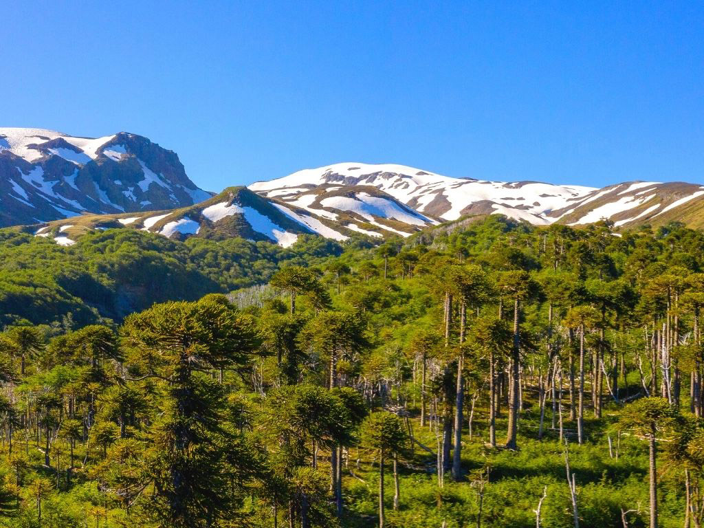
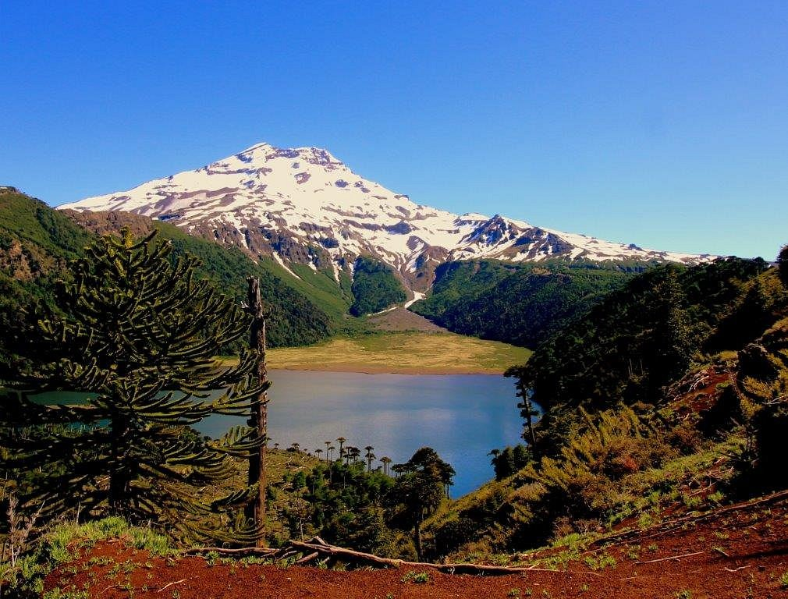

Parque Nacional Villarrica
Sendero Las Araucarias
Distancia: 4 km
Ver detalle de Sendero Las AraucariasRegión de La Araucanía
Fotografías ilustrativas de paisajes.

Parque Nacional Villarrica
Distancia: 4 km
Ver detalle de Sendero Las Araucarias
Parque Nacional Huerquehue
Distancia: 3 km
Ver detalle de Sendero del Bosque
Reserva Nacional Malalcahuello
Distancia: 5 km
Ver detalle de Sendero Laguna VerdeParque Nacional Villarrica
Recorrido de 4 km, de dificultad fácil.
Parque Nacional Huerquehue
Recorrido de 3 km, de dificultad fácil.
Reserva Nacional Malalcahuello
Recorrido de 5 km, de dificultad fácil.
Equipo básico
Protección
Hidratación
Abrigo